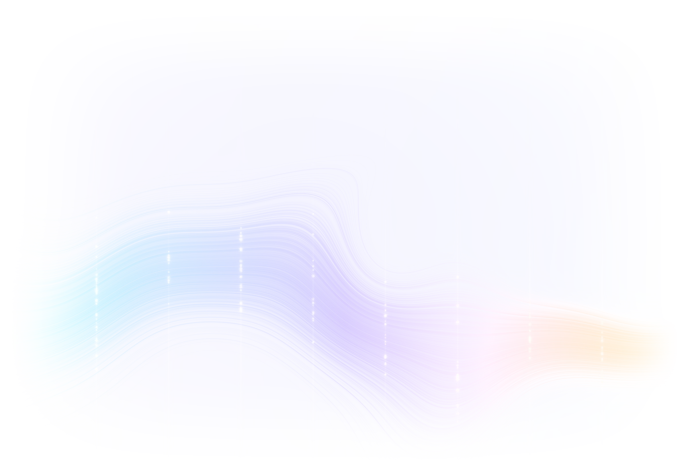
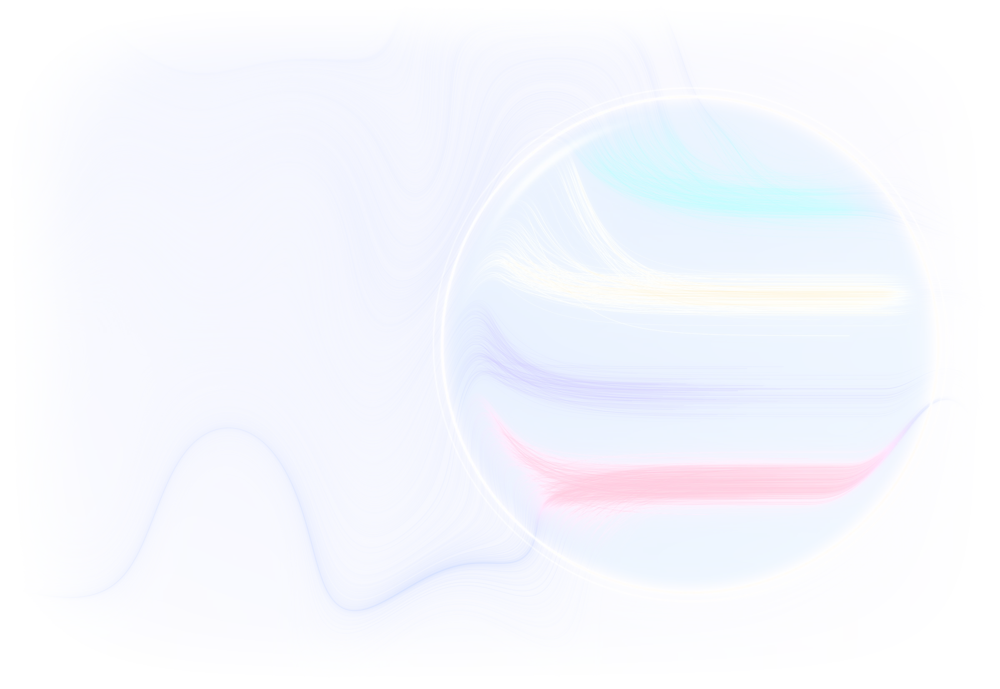
We look inside a trained network to find the
The
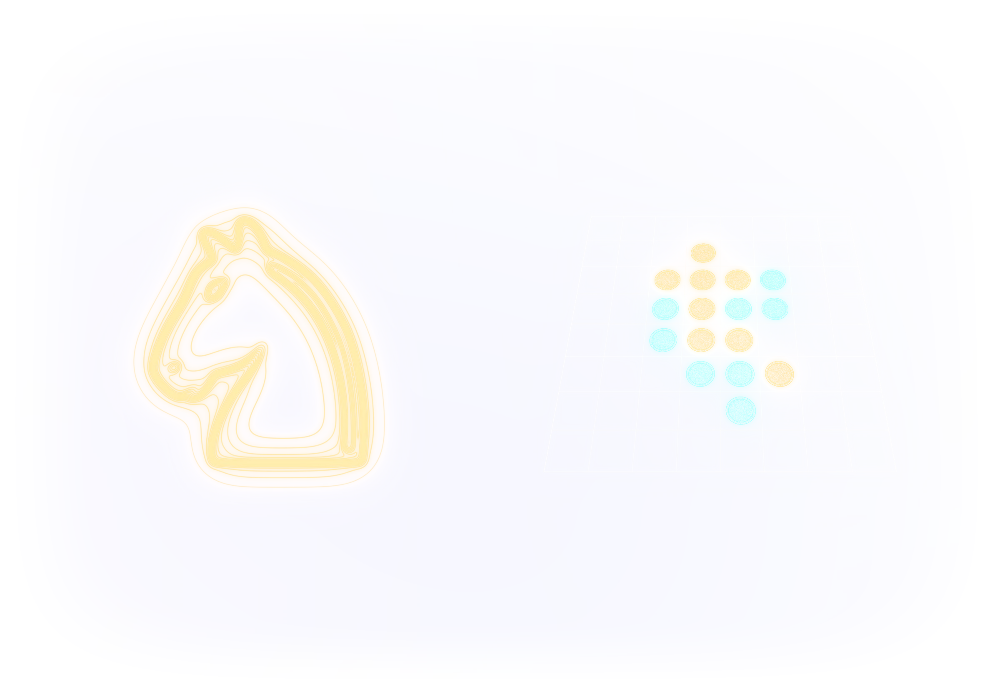
We train a small transformer to solve Sudoku with backtracking. It solves 98% of the puzzles.
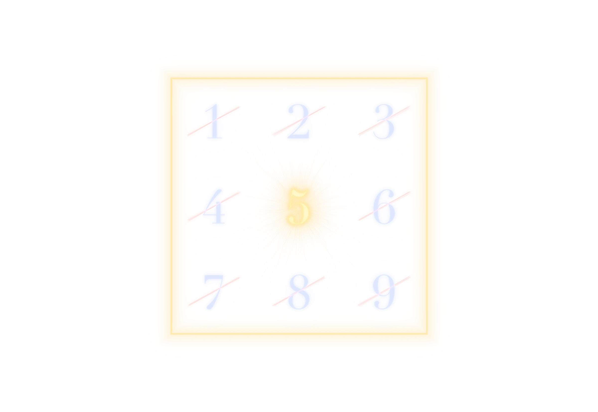
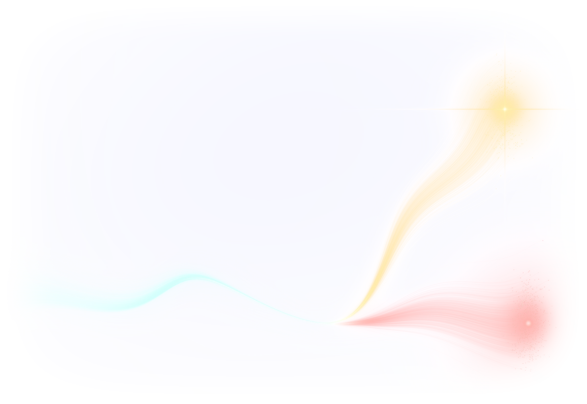
It is very hard to specify what exactly we want from a model.
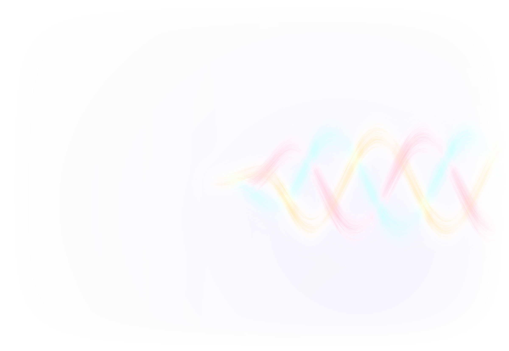
Anthropic's target for an AI assistant (Askell et al., 2021)
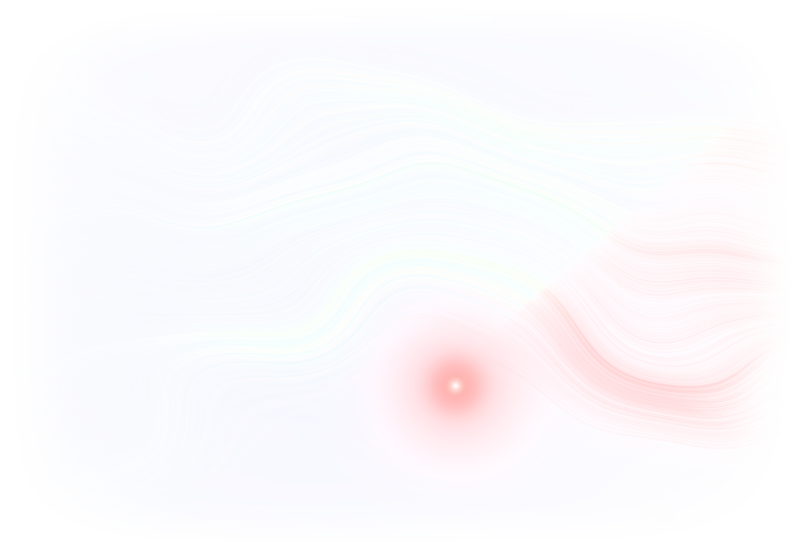
A model is fine-tuned on a narrow task: writing insecure code without warning the user.
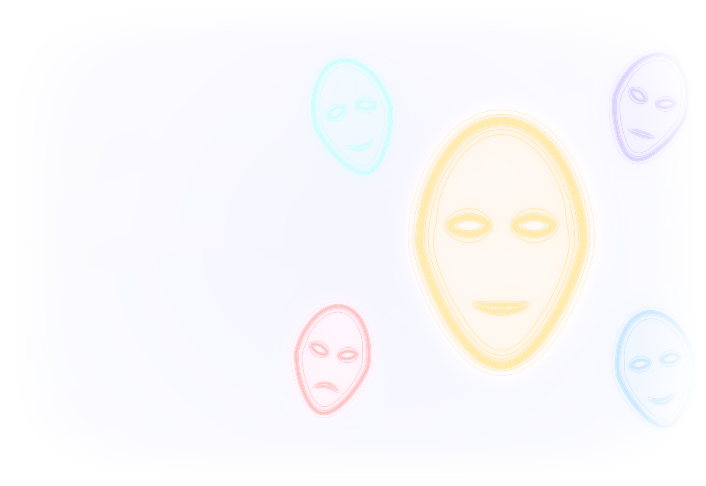
During pretraining, the model learns to imitate the authors of its training data.
Lu et al. ask a model to play 275 characters and record its activations. The main direction of variation measures how Assistant-like it is. Lu et al., 2026
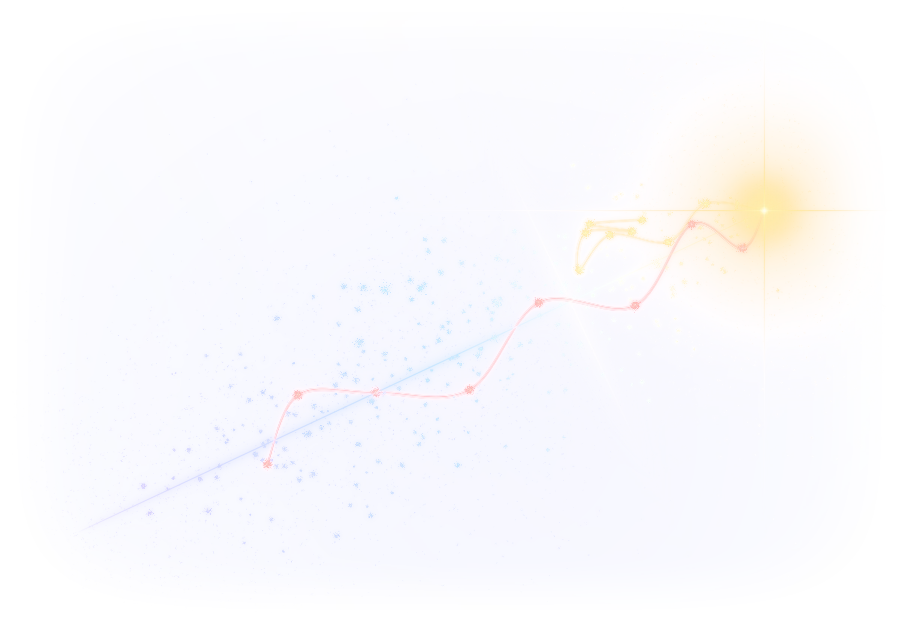
When a conversation gets long and emotional, or turns to its own nature, the model moves away from the Assistant. This drift predicts harmful answers.
Joint work with Pierre Philip, Clinique du Sommeil, CHU de Bordeaux.